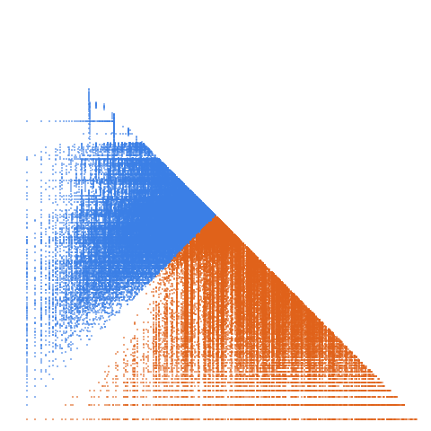

23-smooth numbers: numbers whose prime divisors are all <= 23

Open in the 3-D viewerA080683 on the OEIS
| Terms | 100,000 (n = 1 … 100,000) |
|---|---|
| Decomposable (a > 2d) | 99,998 |
| Level class, k > L | 41,495 · 41.50 % |
| Weight class, k ≤ L | 58,503 · 58.50 % |
| Ties, k = L | 13 |
| On the level line L = 1 | 435 |
| Forced level, l ≤ d² | 7,415 |
| Range of a(n) | 1 … 397,393,920 |
| Range of the jump d | 1 … 69,696 |
| Largest weight k, level L | 347,486,089, 9,545,217 |
11,847 different gaps occur, from 1 to 69,696; the level share is 41.50 %; 7.4 % of terms are forced level (l <= d^2).
SHA-256 of the CSV decompwlj_A080683.csv, checked before it is saved: c07e9906c0a6677f999ee7d3b564bd92c0208cef9e675f7a0a94214a95ed594f (all of them: sha256.txt, for sha256sum -c)
The decomposition
Every term of a strictly increasing sequence is written a(n) = k(n)·L(n) + d(n): the jump d = a(n+1) − a(n), the weight k the least divisor of a − d greater than d, the level L = (a − d)/k. A term decomposes when a > 2d; it is in the level class when k > L and in the weight class when k ≤ L. See decompwlj.com and arXiv:0711.0865, or how it works, with worked examples and a live one.